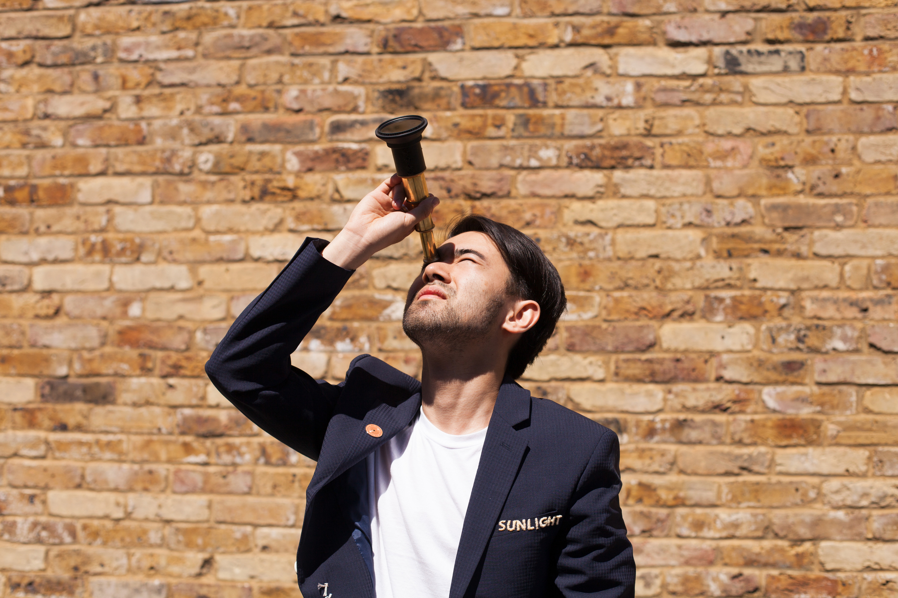
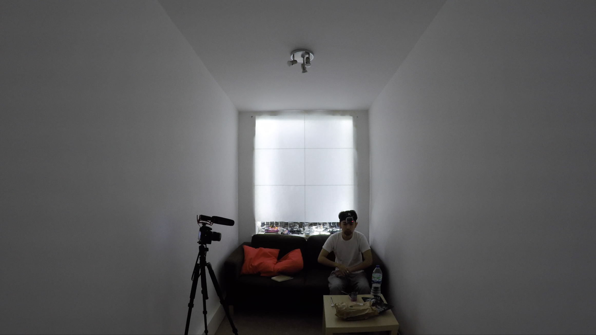
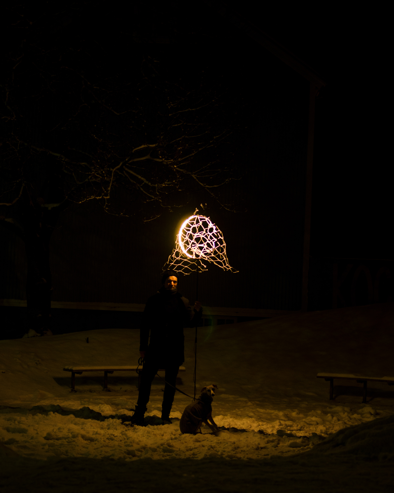
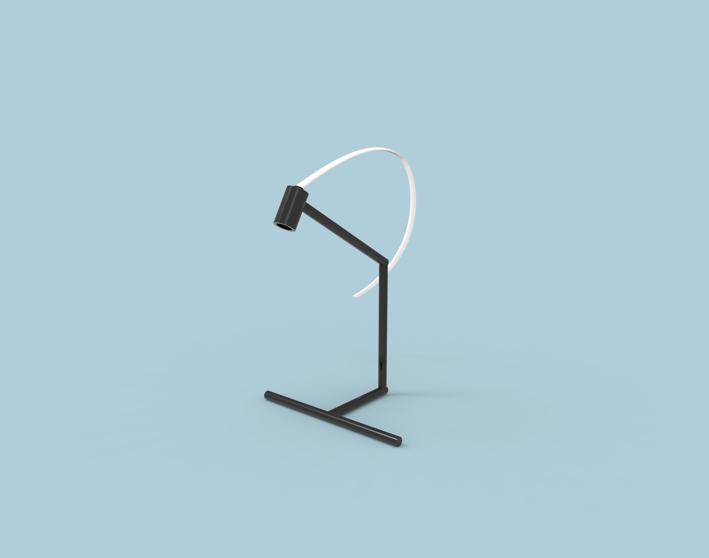

This project has started my simple question "what really is the value of sunlight"?

In this man made nature, a lot of our environment is replaced by digital phenomena, the amount of time we are exposed to sunlight is limited thanks to the artificial lights.
From taking a holiday from sunlight to stay in the rooftop, I have aimed to amplify my "exposure" to sunlight in both mind and body.


Perhaps my rituals to get more sunlight are absurd, however the distance we have built from the nature by making up the man made nature is also absurd.
Our inventions after the post-industrial society had changed our lifestyles and behaviours where we have less and less interactions with the nature. The sun, which always sits above us, has been always the main source of energy / inspiration / encouragement. But at a moment the contact points of sunlight is getting to be replace by the our inventions, consequently lead us to have more and more association with the man made nature.
Even though it is cliche to say that sunlight is important for us, it is critically significant to recognise over again what does it means to live in the nature not the man made nature.


YouTube Playlist
Project by KOTARO ABE